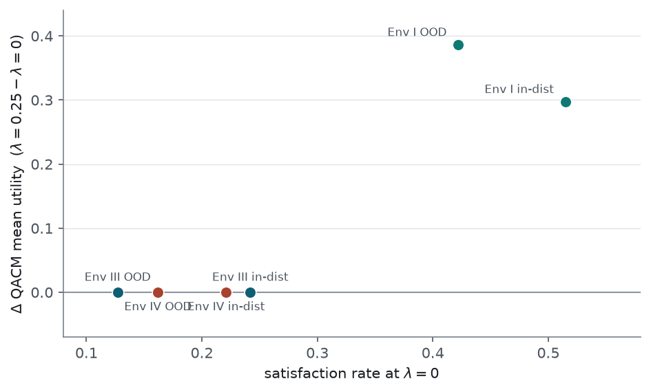
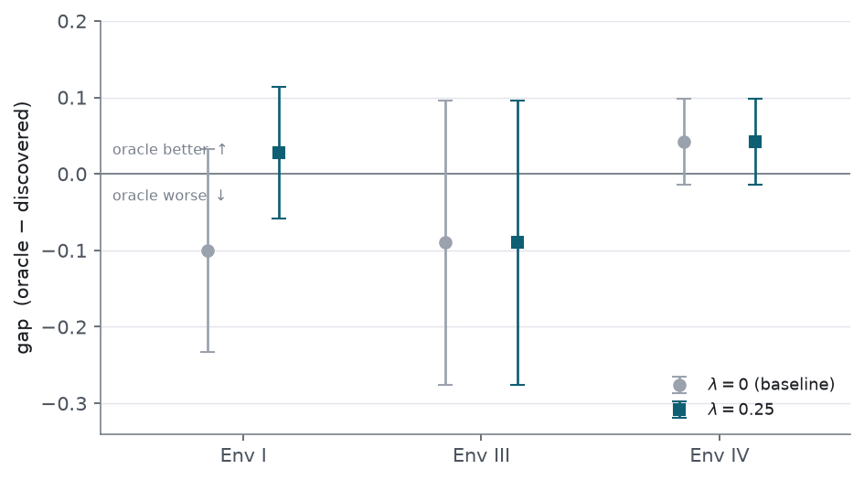

Implementation and planner-level validation of the standardized-utility objective term (Env I / III / IV)
Abstract
We implement the objective modification proposed in the 2026-08-25 report and validate it at the
planner level. The modification adds a standardized-utility term, scaled by a scalar
λ (utility_weight), to the per-member cost of the QACM
planner; at λ=0 the planner is bit-identical to the prior version.
On Env I the term increases the mean QACM utility from −0.083 to +0.303
out-of-distribution and from −0.073 to +0.224 in-distribution, and it increases both the
satisfaction rate and the 10th-percentile utility. The effect saturates over
λ∈[0.1,0.5]; λ=0.25 was selected
using only Env III and the in-distribution range, with no reference to the Env I/IV
out-of-distribution utility. On Env III and Env IV every reported quantity is bit-identical
at λ=0 and λ=0.25, because their
decisions rarely enter the satisfied region on which the term acts; the residual negative utility of
Env IV is therefore not addressed by this modification. Under the matched-decision-set gate, the
oracle−discovered utility gap remains non-material on all three environments at
λ=0.25, so the 2026-08-25 STOP verdict is unchanged.
1. Background
The 2026-08-25 report identified a structure-independent cause of the negative planner utility. The QACM per-member cost sums a hinge distance to each xApp’s satisfaction threshold and a discrete satisfaction bonus. Once an xApp is satisfied, its hinge distance is clamped to zero, so the cost becomes indifferent to how far above threshold the utility sits. Because the argmin scan keeps the first candidate encountered among equal-cost candidates, the planner does not climb toward the reachable utility ceiling once a conflict is nominally satisfied. That report proposed (its §5, “Option A”) to restore a utility gradient in the satisfied region by adding a small signed-utility term to the per-member cost, and left the implementation and validation to a subsequent step. This report is that step.
2. Methods
2.1 The standardized-utility term
For a candidate scored by ensemble member m, let u_i be the standardized (z-scored) utility of xApp i already computed for the distance and satisfaction logic, d_i the hinge distance, s_i∈{0,1} the satisfaction indicator, w_i the weight, and τ the scaling term. The per-member cost becomes
The utility u_i is not direction-normalized, so the explicit
sign_i reproduces the direction convention of the existing satisfaction
rule: subtracting λ·sign_i·u_i lowers the cost for
higher utility when direction 0 (maximiser) and for lower utility when direction 1
(minimiser). The term is added inside each member’s cost, before the risk-averse
quantile aggregator, so the aggregator still reduces over utility-inclusive per-member totals; the
objective does not become an expected-utility objective. The term is present on every scoring path
(the vectorized path, the reference path, and the single-member paths of QACM and MCTS). The weight
utility_weight defaults to 0.0; a byte-level check
over the full candidate grid confirms that λ=0 reproduces the prior
cost exactly. The change is committed as e7534e1 on feat/v2. A defect on the
MCTS single-member path (the term was initially omitted there) was found in review and corrected
before commit; a regression test covers it.
2.2 Leakage-free selection of λ
Because the utilities are standardized, λ is dimensionless and comparable across environments. We swept λ∈{0,0.1,0.25,0.5} and selected the value using only (i) Env III, the environment with positive utility that must not regress, and (ii) the in-distribution parameter range, where model error is small. The Env I and Env IV out-of-distribution utilities were not consulted during selection. The selected value was then applied unchanged to the out-of-distribution evaluations.
2.3 No-regression protocol
We re-ran the matched-decision-set gate of the 2026-08-25 report at the selected λ. The gate installs the true-adjacency enumeration graph as the conflict set for both the discovered and oracle arms (identical decision counts: 300 / 690 / 570 for Env I / III / IV), uses the quantile aggregator, and pairs seeds. The decision rule is unchanged: the oracle structure is judged to have a material advantage only if the paired oracle−discovered utility gap is positive and exceeds the across-seed spread; otherwise the STOP verdict holds. The λ=0 arm is bit-identical to the prior code, so the 2026-08-25 gate values serve as the λ=0 baseline.
3. Results
3.1 Selection: in-distribution saturation and Env III invariance
On Env I in-distribution, the utility reaches its full value at λ=0.1 and is flat thereafter (+0.224 / +0.224 / +0.227 at λ=0.1 / 0.25 / 0.5); the satisfaction rate and lower tail are identical across these values. On Env III in-distribution the utility is invariant to λ (−0.1028 at all four values). Selection is thus insensitive within [0.1,0.5]; we set λ=0.25 as the mid-range value. The insensitivity itself limits any dependence of the conclusions on the chosen value.
3.2 Env I
On Env I the term increases the mean QACM utility in both regimes and does not reduce the lower tail or the satisfaction rate (Table 1). The λ=0 values reproduce the 2026-08-25 baselines (out-of-distribution −0.083, in-distribution −0.073) to the reported precision.
| Regime | QACM mean, λ=0 | QACM mean, λ=0.25 | sat. rate | tail p10 |
|---|---|---|---|---|
| Out-of-distribution | −0.083 | +0.303 | 0.42 → 0.58 | −1.475 → −0.890 |
| In-distribution | −0.073 | +0.224 | 0.52 → 0.62 | −1.526 → −0.896 |

3.3 Environment-selectivity and mechanism
On Env III and Env IV every reported quantity is bit-identical at λ=0 and λ=0.25 (Table 2). The term changes a decision only when candidates lie in the satisfied region, where the hinge distance is clamped and the cost is otherwise flat. For unsatisfied candidates the existing distance term already increases with utility in the same direction, so the added term reinforces the existing ordering rather than changing the argmin. The magnitude of the effect therefore tracks the satisfaction rate: it is large where satisfied candidates are common (Env I, rate 0.42–0.52) and zero where they are rare (Env III and Env IV, rate 0.13–0.24), as shown in Figure 2.
| Cell | QACM mean, λ=0 | QACM mean, λ=0.25 | sat. rate |
|---|---|---|---|
| Env III, in-distribution | −0.103 | −0.103 | 0.24 |
| Env III, out-of-distribution | +0.121 | +0.121 | 0.13 |
| Env IV, out-of-distribution | −0.140 | −0.140 | 0.16 |
| Env IV, in-distribution | −0.412 | −0.412 | 0.22 |

3.4 No-regression under the matched-decision-set gate
At λ=0.25 the oracle−discovered gap is non-material on all three environments, so the STOP verdict is unchanged (Table 3, Figure 3). On Env III and Env IV the gate is bit-identical to the λ=0 baseline, as expected from §3.3. On Env I both arms increase relative to the baseline (discovered −0.218→+0.013, oracle −0.318→+0.041, four paired seeds); the gap moves from −0.100±0.133 to +0.028±0.086. The sign of the Env I gap changes, but its magnitude remains below the across-seed spread, so it is not material and the verdict does not change. Env III’s positive utility does not regress.
| Env | gap, λ=0 | gap, λ=0.25 | decisions | verdict |
|---|---|---|---|---|
| Env I | −0.100 ± 0.133 | +0.028 ± 0.086 | 300 | STOP |
| Env III | −0.090 ± 0.186 | −0.090 ± 0.186 | 690 | STOP |
| Env IV | +0.042 ± 0.056 | +0.042 ± 0.056 | 570 | STOP |

3.5 Disagreement-penalty sensitivity
Separately from the objective term, we re-checked the ensemble-disagreement penalty in-distribution on Env I (existing checkpoint, no retraining). With the penalty active the mean utility moves from −0.073 to +0.190 and the satisfaction rate increases by 0.10. The penalty therefore also helps in-distribution, not only out-of-distribution as reported earlier. This is a sensitivity observation; the penalty coefficient was not fixed per environment. An environment-agnostic coefficient, calibrated on the train-range disagreement scale, remains future work.
4. Interpretation
The objective term corrects the structure-independent component of the negative utility on Env I and is inert elsewhere. Because the term acts only in the satisfied region, its effect is scoped to environments in which conflicts are frequently satisfied; it is regression-safe on the others by construction. A lexicographic tie-break (Option B in the prior design) would act on the same satisfied region and would therefore also leave Env III and Env IV unchanged; it is not indicated by these results. The decision-level conclusion of the 2026-08-25 report is preserved: a perfect graph confers no material advantage under a matched decision set, at both λ=0 and λ=0.25.
5. Limitations and open items
- Env IV is not corrected. Its negative utility is unchanged by the objective term, and its in-distribution utility (−0.412) is lower than its out-of-distribution utility (−0.140). A more accurate model does not account for the shortfall, so the cause is neither the satisfied-region flatness addressed here nor out-of-distribution model exploitation alone. The prior out-of-distribution penalty sweep also did not improve Env IV (−0.140 to −0.161). The candidate next lever is the soft-satisfaction objective (Option C), which removes the threshold clamp entirely; it introduces one scale hyperparameter and is a larger change, so it is left as an explicit decision rather than adopted here.
- Seed coverage. The single-cell utilities in Tables 1–2 are seed 0. The matched gate uses four paired seeds for Env I; Env III and Env IV are reported as bit-identical to the four-seed λ=0 baseline rather than re-run, because the term does not alter their decisions.
- Fast evaluation. All evaluations reduce the MCTS simulation count for speed; this does not affect QACM, whose per-planner common-random-number seeding makes it independent of the MCTS budget.
6. Reproducibility
Code change: commit e7534e1 (feat/v2), adding utility_weight to
the planner configuration and the term to cost.py, qacm.py,
mcts.py, and the aggregator plumbing; 82 CPU tests pass. Evaluations are planner-level
re-runs of the checkpoints listed in the 2026-08-25 report, via cdd_oran.cli evaluate with
per-cell copied configurations and, for the gate, --enum-source oracle. Numeric source:
.temp/new_arch/reports/task2_objfix_results.md. This report and its figures are stored
under reports/ and are untracked, consistent with the project convention.
e7534e1 (feat/v2, not pushed).